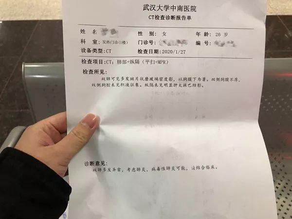
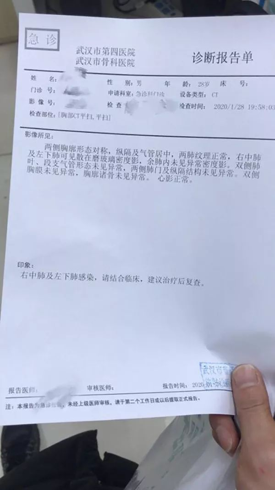

他把近8万人份的试剂盒带进湖北
原文链接 备份链接 湖北省人民医院PCR实验室。 本文约4483字 预计阅读时间12分钟 作者 秦珍子 编辑 从玉华 邱辰的假期变成了一次征途。 最近1个月，他把近8万人份的试剂盒带进交通封锁的湖北，也带进一度封闭的市场。 春节前后，湖 …
实习生 赵雨萌 澎湃新闻记者 薛莎莎
“如果孕妈妈不幸感染，要保持好心态，吃好睡好，要相信宝宝一定会没事，也要相信自己会康复。”2月12日下午，澎湃新闻联系到许佳（化名）时，她如是说道。

许佳的检测报告显示双肺感染。受访者供图
许佳今年26岁，家住武汉市，1月23日开始发热，并伴有咳嗽、乏力、食欲不振等症状。随后几天，许佳持续发热，并一度烧至38摄氏度，咳嗽愈加严重。她27日来到武汉大学中南医院检查。
当时已怀孕9个月的她，担心自己感染新冠肺炎，更担心腹中的孩子通过母体被感染。27日，她去医院做了检查，结果让她十分崩溃。医生称，CT显示她双肺感染，属于新冠肺炎高度疑似患者，建议她立即剖腹产。当晚8点，她顺利产下一名男婴。随后，许佳和孩子分别做了核酸检测，结果显示她（的检测结果）是阳性，孩子是阴性。
得知结果的许佳长吁了一口气称：“这是不幸中的万幸”。
1月28日，许佳转至武汉市普仁医院隔离病房治疗。那几天，许佳的丈夫也开始发低烧，随后被医院以“疑似病人”收治。
经过医护人员近半个月的精心治疗，两人身体逐渐康复，核酸检测均呈阴性。2月10日，两人双双康复出院。

许佳丈夫的检测报告显示肺部感染。受访者供图
【许佳口述】
“不幸中的万幸”：宝宝是阴性
我叫许佳，今年26岁，家住武汉市。
1月23日，我开始发烧，最高烧到37.5摄氏度，还伴有咳嗽、乏力、食欲不振。我当时担心自己感染了新冠病毒，更担心通过母体传染给腹中宝宝。我就去了武汉一家妇幼医院检查，医生称是普通感冒，给我开了些药服用。
吃药不仅未见效，我的体温还持续升高，一度烧至38摄氏度，咳嗽也愈发严重。我感觉不太对劲，27日，我去武汉大学中南医院重新检查。
CT片子显示我双肺已经感染，医生称我为“高度疑似新冠肺炎患者”，还让我做了核酸检测。听到医生说我是高度疑似患者，我非常崩溃，心里一直想孩子千万不能有事。医院也担心孩子被感染，紧急为我安排了当晚8点的剖腹产手术。手术顺利，当天，医院就给宝宝做了核酸检测。
等待核酸检测结果的两天，真的非常煎熬。29日，结果终于出来了，我是阳性，幸运的是，宝宝是阴性。得知这个结果，我长吁了一口气，我自己感染已经不算什么了，孩子没事是不幸中的万幸。
产后第二天，我转入新冠肺炎治疗的定点医院武汉市普仁医院的隔离病房治疗。
“老公在病房照顾我被感染”
孩子出生后，先在医院留观了几天，后来被家人接回老家照顾。
网上有评论说孕妇的免疫力低，一旦感染，病情加重得快。家人很担心我对抗不了新冠病毒。
住进普仁医院的隔离病房后，老公考虑到我刚生完孩子，又感染新冠病毒，遭受身体和心理上双重压力，怕我吃不消，他就向医院申请要进病房照顾我。医院本来怕他感染不允许他进病房，但我老公一直坚持，医院才破格同意。
就在我转入普仁医院的那几天，我老公开始发低烧。看到新闻上说新冠肺炎传染性很强，他28日去我家附近的一家医院拍了CT，结果显示双肺有点感染。
他随后在普仁医院做了核酸检测，阴性。但医生仍要求我老公以“疑似病人”隔离治疗。
老公也疑似感染后，我心里很内疚。之前，他为了照顾我，在病房里的阳台上搭个折叠床睡觉。我猜想，他可能是因为照顾我没休息好，免疫力降低才感染的。
虽然老公也住院了，但他还安慰我说他不怕。说实话，我能康复得这么快，多亏了老公的陪伴，他陪我聊天、转移我的注意力。要是只有我一个人，我估计早就崩溃了。
“医护人员都很照顾我们”
因为我刚生完孩子，情况特殊，所以医护人员在对我的治疗和护理上，尤其注意。
护士每天会按时来给我量体温和血氧饱和度。起初，我每天要输12瓶药水，从早上9点输到晚上7点。后来我身体好转，药水减到7瓶。
我腹部有剖腹产留下的刀口，护士每隔两三天就给我换一次药。病区的护士黄银让我很感动，我行动不便，她主动扶我上厕所。我和老公隔离无法出医院，她主动把联系方式给我，帮我们购买生活用品。
医院的伙食也非常好。这里的饭菜清淡，适合病人吃，偶尔也会发牛奶、提高免疫力的奶粉给病人。有一次，食堂多出两份饭，护士就拿给我和老公，让我们多吃点。现在出院了，还有点想念医院的蒸蛋。
完全康复时要回家抱抱宝宝
在医护人员近半个月的精心照料下，我和丈夫的身体逐渐好转。
2月9日左右，我们做了各项检查，也分别做了两次核酸检测，结果均是阴性。主治医生评估我们的身体状况，结合CT及核酸结果，告诉我们可以出院了。
现在我和丈夫在家隔离观察，体温正常，我偶尔还有点咳嗽、胸闷，但身体整体状态不错，隔离后需要去医院复查。
经过这段时间的治疗，我认为新冠肺炎没有大家想得那么可怕，最重要的一点就是要提高自身免疫力。
我还想对孕妈妈们说，如果不幸感染了新冠病毒，要保持好心态，吃好睡好，要相信宝宝一定会没事，也要相信自己会康复。
宝宝出生后，我和老公一直不在身边。等我们完全康复了，我要赶紧回老家抱抱宝贝。
本期编辑 邢潭
推荐阅读


原文链接 备份链接 湖北省人民医院PCR实验室。 本文约4483字 预计阅读时间12分钟 作者 秦珍子 编辑 从玉华 邱辰的假期变成了一次征途。 最近1个月，他把近8万人份的试剂盒带进交通封锁的湖北，也带进一度封闭的市场。 春节前后，湖 …
原文链接 备份链接 蔡婷说：“大家都荒谬到这个程度了。” 2月5日下午，湖北省人民医院拥挤的门诊部，蔡婷排了3个小时的队。这家医院昨天做了1500份新型冠状病毒的核酸检测，43岁的蔡婷和母亲的样本，也在其中。现在，蔡婷全部心思都在这上面， …
原文链接 备份链接 大约50名患者和30名医务人员 确诊感染了新冠肺炎 2月8日，《中国新闻周刊》独家获悉，武汉市精神卫生中心出现院内感染。据来自该院内部的消息源透露，至少有大约50名患者和30名医务人员确诊感染了新冠肺炎。 ***出 …
原文链接 备份链接 人类的发展史，就是疾病的增加史2月1日，武汉市汉口新华路上，在疑似新型冠状病毒感染者排队确诊的队伍旁，一名现场维持秩序的警察正在做防护准备。摄影/长江日报 金思柳 认识一下“新冠君”，人类疾病的新成员 *本刊记** …
原文链接 备份链接 【财新网】（记者 高昱 萧辉）武汉一线已经有1102名医务人员确诊新冠感染，而湖北省全省的感染数1502例。这意味着在武汉和湖北，医务人员感染新冠占当地总感染人数的比例，至2月11日已经达到5.6%（武汉） …